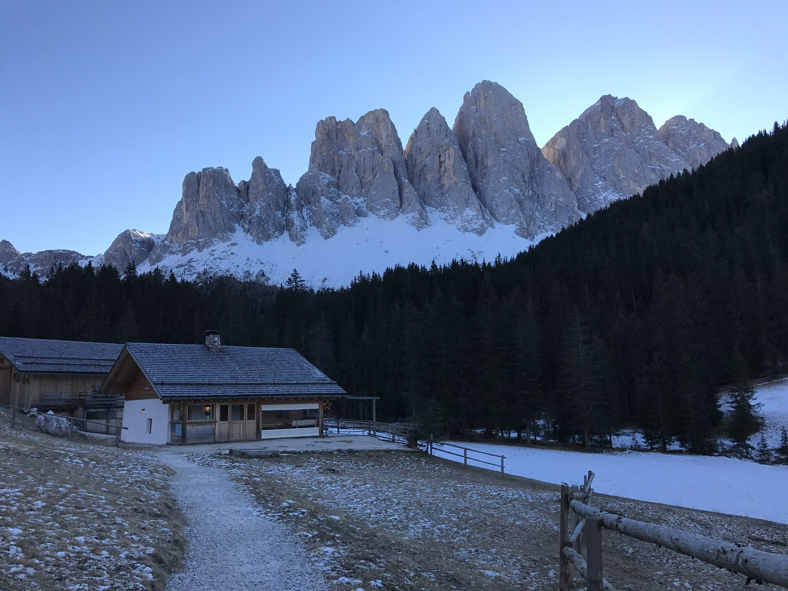

2009 年列入联合国教科文组织世界自然遗产。多洛米蒂的山体是三叠纪（约 2.5 亿年前）特提斯海的珊瑚礁化石：白云岩（dolomite）风化后形成标志性的浅灰白色峰林与刀脊。整个遗产区涵盖 9 个山群，Val Gardena 是其中 Puez-Odle 群的核心入口。
看点路线
Il Percorso
- 1理解"白云岩"：为什么多洛米蒂的山是浅色而非深灰
- 2从 Seceda 或 Resciesa 看 Odles 群的"礁体原貌"：垂直的岩层就是古老的礁坡
- 3Great Dolomites Road：Bolzano → Cortina 的山景公路（途经 Passo Gardena / Passo Sella / Passo Pordoi）
- 410 月的落叶松（Larch）：山谷变成金色
地质与景观
Le Dolomiti · 5 个知识点

化石珊瑚礁
多洛米蒂的山体原本是特提斯海（Tethys Ocean）中的珊瑚礁与环礁。海底的钙质沉积在数千万年间堆出巨大的礁体，后来非洲板块与欧洲板块碰撞将海底推出海面--你脚下踩的是两亿五千万年前的海床。
白云岩（Dolomite）
1791 年法国地质学家 Déodat de Dolomieu 发现这种岩石的碳酸钙中含有镁（CaMg(CO₃)₂），矿物因此得名 dolomite，山脉也随之叫 Dolomiti。白云岩比普通石灰岩更硬更浅色，风化后形成尖锐的峰林与塔状山体。

Puez-Odle 自然公园
Val Gardena 的后山就是 Puez-Odle 自然公园：Odles/Geisler 群的垂直白云岩壁是公园的主视觉。从 Resciesa 或 Seceda 顶站可徒步进入公园腹地。地质学家来这里读"礁体剖面"--岩层的每一层对应一个地质年代。
"苍白之山"的传说
拉定民间传说：月亮公主爱上了一位阿尔卑斯牧羊人，她的父亲（月王）为女儿造了一座银白色的宫殿--就是多洛米蒂的"苍白之山"（Monti Pallidi）。科学版答案：白云岩的颜色来自其矿物成分与光散射。两个版本都成立。
10 月的落叶松
10 月是落叶松（Larch / Lärche / Larc）变金的季节：山谷从绿色渐变为金色。这是阿尔卑斯唯一在秋天落叶的针叶树--与常绿的云杉形成对比，把山坡染成两层色。10 月中旬最壮观。
历史故事
Le Storie
壹Déodat de Dolomieu 与一座山的命名
1791 年，法国地质学家 Déodat Gratet de Dolomieu（1750-1801）在多洛米蒂采集岩石样本时，发现这里的"石灰岩"与普通石灰岩不同：酸不起泡（因为含镁的碳酸钙不溶于稀盐酸）。
他把样本寄给瑞士化学家 Nicolas-Théodore de Saussure，后者确认这是一种新矿物并以发现者命名：dolomite。此后整片山脉都被叫作"多洛米蒂"（Dolomiti）。
Dolomieu 本人在法国大革命中曾被当作贵族关进监狱--在牢里写完了他最重要的地质学论文。他大概没想到，自己的名字会附着在一片 1,500 平方公里的山脉上。
贰两亿五千万年前的海
今天你站的多洛米蒂山顶，两亿五千万年前是温暖的浅海：特提斯海（Tethys Ocean）的西部边缘。珊瑚礁沿火山岛屿生长，就像今天的大堡礁。
三叠纪末期，环境剧变：海洋酸化导致大部分珊瑚礁死亡。但这些已经钙化的礁体被后期的沉积物掩埋、压实，在地下变成了岩石。
2,000 万年前，非洲板块开始撞向欧洲板块：阿尔卑斯造山运动把这段古老的海底推出了海面。你今天看到的白云岩壁，是那场碰撞留下的"海底化石"。
叁UNESCO 的评价
2009 年 6 月 26 日，UNESCO 将多洛米蒂列入世界自然遗产名录（ix 条款：地球历史与地貌演化的杰出范例）。遗产区涵盖 9 个山群，总面积约 142,000 公顷。
UNESCO 的官方评价：多洛米蒂是"世界上最具代表性的白云岩地貌区域"--它集中展示了从浅海礁体到高山峰林的完整地质过程，且正在进行的侵蚀作用（冰川、风化、滑坡）持续塑造着这些地貌。
肆"苍白之山"的传说
拉定传说：月亮公主爱上了阿尔卑斯山的一位牧羊人，但她属于月光、无法在白天停留。月亮公主的父亲--月王--为女儿造了一座银白色的宫殿，让她可以在白天也住在靠近爱人的地方。
这座宫殿就是多洛米蒂的"苍白之山"（Monti Pallidi）。科学版：白云岩的颜色来自碳酸钙镁晶体的光散射。但站在 Seceda 山脊上看夕阳把整个山体染成银粉色时，你会选择相信传说。
伍垂直礁坡的秘密
从 Seceda 或 Alpe di Siusi 看到的巨大岩壁，不是普通的悬崖--它们是古代珊瑚礁的"礁坡"剖面：从礁顶到礁底的整个斜坡被完整地竖了起来。
岩壁上的每一层水平条纹对应一个地质年代：细密的层理是浅水碳酸钙沉积，厚层是礁体主体，不规则的斑点是古代海绵与珊瑚的化石。带一个放大镜上山，你可以在岩石表面看到 2.5 亿年前的珊瑚切面。
陆白云岩 vs 石灰岩
白云岩（dolomite，CaMg(CO₃)₂）与普通石灰岩（calcite，CaCO₃）的区别不只是化学式多了一个镁离子：白云岩更硬、更耐风化。
这就是为什么多洛米蒂的山如此尖锐：较软的石灰岩会被冰川和雨水磨圆，但白云岩的边缘在千万年的侵蚀后仍然保持锋利。多洛米蒂的塔峰、刀脊、针状岩柱--全部是这种"硬岩抗风化"的结果。
柒冰川的雕刻刀
多洛米蒂的 U 型山谷（包括 Val Gardena）是冰川的遗产：末次冰期（约 1 万年前结束）的冰川沿山谷刮削，把 V 型河谷变成了宽阔的 U 型。
冰川退去后留下的痕迹在 Val Gardena 处处可见：山谷两侧的平底（冰川磨蚀面）、散布的巨石（冰川搬运的"漂砾"）、以及 Alpe di Siusi 的平坦台地（冰川刮出来的高原）。从 Seceda 顶站向下看整个山谷的轮廓--那就是冰川留下的形状。
捌10 月的金色
10 月是落叶松（Larix decidua）变金的季节：山谷从绿色渐变为金色。落叶松是阿尔卑斯唯一在秋天落叶的针叶树，与常绿的云杉（spruce）形成鲜明的两色对比。
金色落叶松 + 白色白云岩 + 蓝天：10 月的多洛米蒂配色是摄影师最爱的组合。最佳观赏时段是 10 月中旬（每年略有浮动，取决于气温骤降的日期）。Val Gardena 的山谷公路沿途即是最佳观赏路线。
玖夜空：多洛米蒂的星空
多洛米蒂的山区几乎没有光污染：10 月的夜空极清，从 Ortisei 镇边步行 5 分钟即可看到银河与北斗七星。
Alpe di Siusi 是南蒂罗尔官方认定的"星空保护区"之一：草甸上没有路灯，夜间只有月光。如果计划拍星空，带三脚架上草甸（缆车停运后可自驾到 Compatsch 停车场步行入）。10 月的新月前后是最佳窗口。
拾Great Dolomites Road 的由来
SS243 + SS48 串联的"Great Dolomites Road"（Grande Strada delle Dolomiti）建于 20 世纪初（1901-1909），最初是军事公路：奥匈帝国为了防卫南部边境而修。
一战后它成了旅游公路：沿途经过的 Passo Gardena、Passo Sella、Passo Pordoi 与 Passo Falzarego 每一个都是观景台。从 Bolzano 到 Cortina 全程约 110km，但真正的驾龄是"每一个 Passo 都想停下来拍照"的 5-6 小时。
参观贴士
Consigli Pratici
- 从 Ortisei 看到的最大岩石墙是 Sassolungo（3,181m）；从 Seceda 看到的是 Odles 群的垂直礁坡
- Great Dolomites Road 自驾：Ortisei → Passo Gardena → Corvara → Passo Falzarego → Cortina，全程约 2.5h（不含停留）
- 10 月天气多变：上午晴朗下午起云是常态；日出后 2h 与日落前 2h 光线最稳
- 山区无光污染：10 月夜空极清，从 Ortisei 镇边即可看到银河
- 海拔 2,500m 以上注意高原反应：走路放慢、多喝水
顺路同游
Da Non Perdere